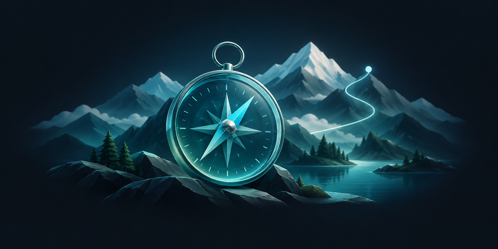
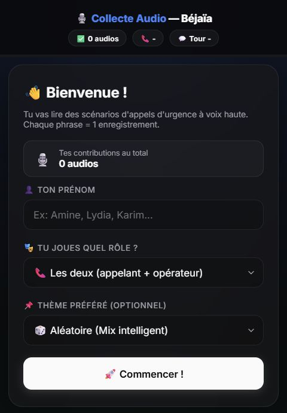

Marketing intelligence01
LIDAL Pulse
A collaborative marketing intelligence application.
My contribution
I connect Python/FastAPI services, React/TypeScript interfaces, multilingual NLP workflows and language-model integration.
SOFTWARE / FULL-STACK / APPLIED AI
01 / SELECTED WORK
06 PROJECTS
Collaborative projects, with my software development contributions.
A collaborative marketing intelligence application.
I connect Python/FastAPI services, React/TypeScript interfaces, multilingual NLP workflows and language-model integration.

A bilingual marketplace connecting clients with independent security agents.
I contribute to the Next.js/React/TypeScript application, including agent discovery, booking and account workflows.
Voice to structured information
FastAPI / Next.jsA collaborative emergency-call research prototype with an operator interface.
I develop collection and annotation tools, integrate models, and contribute to the operator interface for transcription and structured incident information.
Travel & booking workflows
Client / Partner / Admin
A collaborative travel and booking platform with client, partner and admin interfaces.
My contributions include authentication routes and fixes to partner booking rendering.

Browser-based audio collection workflows connected to Drive and Sheets.
I contribute software development for browser recording and audio collection workflows, with Apps Script integration for Drive and Sheets.
Golf Tournament Management
C# / ASP.NET Core MVCA team ASP.NET Core MVC application for golf tournament management.
My contributions include interface improvements, database query fixes, integration tests and PostgreSQL deployment adjustments.
02 / TECHNICAL TOOLKIT
Python · FastAPI · C# · ASP.NET Core
TypeScript · JavaScript · React · Next.js · HTML / CSS
SQL · PostgreSQL · SQLite · Entity Framework Core
pytest · xUnit · Playwright · Integration tests
NLP · Speech processing · Model integration
03 / BACKGROUND
I'm a software developer based in Canada. I build web applications, backend APIs and tools that connect data, models and user workflows.
In collaborative projects, my role is software development: connecting services and interfaces, integrating models, and improving application workflows.
I earned an Ontario College Diploma in Computer Programming at Collège La Cité, after completing two years of the integrated preparatory cycle at ESTIN in Béjaïa.
2024–2026
Computer Programming
Ontario College Diploma · Earned
2021–2023
Integrated Preparatory Cycle
Two years · Mathematics and Computer Science
HAVE AN OPPORTUNITY IN MIND?
Open to backend, full-stack and applied AI roles in Canada.